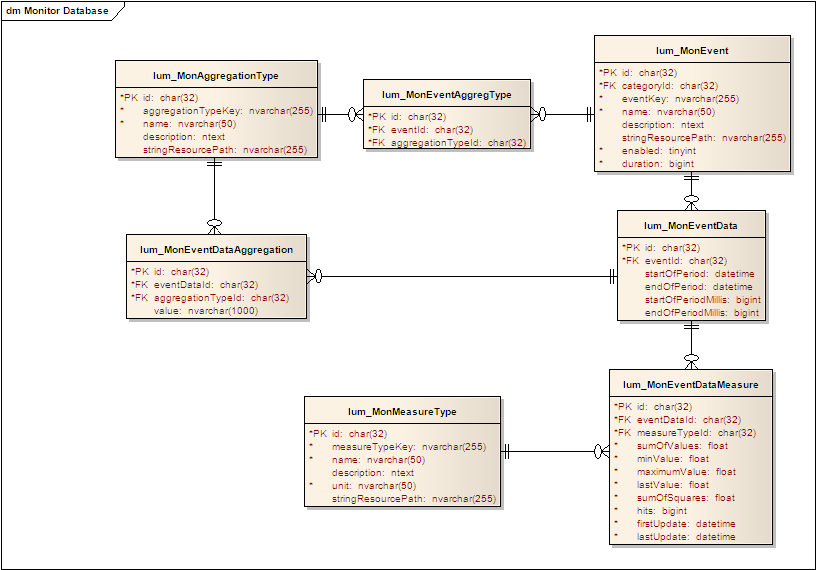

Accessing Monitored Data
Introduction
This document illustrates how to access the data collected by the monitoring framework.
One useful purpose for such access is for generating reports using this data.
The access is shown in a step-by-step style, with SQL examples. Note that these
tables may be used only for read operations (SELECT) and their data must not
be changed directly (such as UPDATE, DELETE or INSERT operations).
For more theoretical background concerning the monitoring framework entities,
see the lumis.portal.monitor package javadoc.
EventData
EventData is the main entity where the data collected by the monitor framework
is stored.
To filter the data by the kind of event, you must perform a join with Event:
SELECT *
FROM lum_MonEventData eventData
INNER JOIN lum_MonEvent event ON eventData.eventId = event.id
WHERE event.eventKey = 'lumis.portal.presentation.ev.pageview'
Using eventData properties, filter by the period can be done easily.
Note that there may be multiple eventData rows due to different aggregations in
the same time period. A GROUP BY is usually used to further
consolidate event data rows.
SELECT eventData.startOfPeriod, eventData.endOfPeriod
FROM lum_MonEventData eventData
INNER JOIN lum_MonEvent event ON eventData.eventId = event.id
WHERE event.eventKey = 'lumis.portal.presentation.ev.pageview' AND eventData.startOfPeriod > '2000-01-01' AND eventData.endOfPeriod < '2010-01-01'
GROUP BY eventData.startOfPeriod, eventData.endOfPeriod ORDER BY eventData.startOfPeriod
EventDataMeasure
The actual statistics data are stored in EventDataMeasure. A join from EventData
is needed to access this data:
SELECT eventData.startOfPeriod, eventData.endOfPeriod, SUM(eventDataMeasure.hits)
FROM lum_MonEventData eventData
INNER JOIN lum_MonEvent event ON eventData.eventId = event.id
INNER JOIN lum_MonEventDataMeasure eventDataMeasure ON eventDataMeasure.eventDataId = eventData.id
WHERE event.eventKey = 'lumis.portal.presentation.ev.pageview' AND eventData.startOfPeriod > '2000-01-01' AND eventData.endOfPeriod < '2010-01-01'
GROUP BY eventData.startOfPeriod, eventData.endOfPeriod ORDER BY eventData.startOfPeriod
But a single EventData may have entries in EventDataMeasure of different measure
types. So it usually makes no sense just joining EventDataMeasure without filtering
the respective measure type. Such filtering can be done by joining MeasureType from
EventDataMeasure:
SELECT eventData.startOfPeriod, eventData.endOfPeriod, SUM(durationMeasure.hits) as durationHits
FROM lum_MonEventData eventData
INNER JOIN lum_MonEvent event ON eventData.eventId = event.id
INNER JOIN lum_MonEventDataMeasure durationMeasure ON durationMeasure.eventDataId = eventData.id INNER JOIN lum_MonMeasureType durationMeasureType ON durationMeasure.measureTypeId = durationMeasureType.id AND durationMeasureType.measureTypeKey = 'lumis.portal.monitor.mt.duration.ms'
WHERE event.eventKey = 'lumis.portal.presentation.ev.pageview' AND eventData.startOfPeriod > '2000-01-01' AND eventData.endOfPeriod < '2010-01-01'
GROUP BY eventData.startOfPeriod, eventData.endOfPeriod ORDER BY eventData.startOfPeriod
If data of another measure for the same event data is also desired, just make
another join to EventDataMeasure and MeasureType to obtain the desired data.
This could be repeated as many times as desired.
SELECT eventData.startOfPeriod, eventData.endOfPeriod, SUM(durationMeasure.hits) as durationHits, SUM(activityMeasure.hits) as activityHits
FROM lum_MonEventData eventData INNER JOIN lum_MonEvent event ON eventData.eventId = event.id
INNER JOIN lum_MonEventDataMeasure durationMeasure ON durationMeasure.eventDataId = eventData.id INNER JOIN lum_MonMeasureType durationMeasureType ON durationMeasure.measureTypeId = durationMeasureType.id AND durationMeasureType.measureTypeKey = 'lumis.portal.monitor.mt.duration.ms'
INNER JOIN lum_MonEventDataMeasure activityMeasure ON activityMeasure.eventDataId = eventData.id INNER JOIN lum_MonMeasureType activityMeasureType ON activityMeasure.measureTypeId = activityMeasureType.id AND activityMeasureType.measureTypeKey = 'lumis.portal.monitor.mt.activity.ms'
WHERE event.eventKey = 'lumis.portal.presentation.ev.pageview' AND eventData.startOfPeriod > '2000-01-01' AND eventData.endOfPeriod < '2010-01-01'
GROUP BY eventData.startOfPeriod, eventData.endOfPeriod ORDER BY eventData.startOfPeriod
Note that these inner joins are appropriated only if each event data has data
collected for all the joined measure types, otherwise an outer join or multiple
selects may be required.
The following statistical data can be easily obtained from the columns in EventDataMeasure:
- Sum of values: SUM(eventDataMeasure.sumOfValues)
- Minimum value: MIN(eventDataMeasure.minValue)
- Maximum value: MAX(eventDataMeasure.maximumValue)
- Number of times the measure was collected: SUM(eventDataMeasure.hits)
- Average value: SUM(eventDataMeasure.sumOfValues)/SUM(eventDataMeasure.hits)
- Sum of squares: SUM(eventDataMeasure.sumOfSquares)
Standard deviation can be calculated using sum of squares, sum of values and
hits, with the formula: (1/hits)*sqrt(hits*sumOfSquares - sumOfValues*sumOfValues).
When grouping, the formula variables hits, sumOfSquares
and sumOfValues are calculated with SUM as shown above.
EventDataAggregation
If it is desired to group by or filter by an aggregation data, you should join
to EventDataAggregation and AggregationType in a similar way as was done to join
with EventDataMeasure and MeasureType. This kind of join may also be done multiple
times to access multiple aggregation values.
SELECT eventData.startOfPeriod, eventData.endOfPeriod, SUM(durationMeasure.hits) as durationHits, SUM(activityMeasure.hits) as activityHits, loginAggregation.value
FROM lum_MonEventData eventData
INNER JOIN lum_MonEvent event ON eventData.eventId = event.id
INNER JOIN lum_MonEventDataMeasure durationMeasure ON durationMeasure.eventDataId = eventData.id INNER JOIN lum_MonMeasureType durationMeasureType ON durationMeasure.measureTypeId = durationMeasureType.id AND durationMeasureType.measureTypeKey = 'lumis.portal.monitor.mt.duration.ms'
INNER JOIN lum_MonEventDataMeasure activityMeasure ON activityMeasure.eventDataId = eventData.i INNER JOIN lum_MonMeasureType activityMeasureType ON activityMeasure.measureTypeId = activityMeasureType.id AND activityMeasureType.measureTypeKey = 'lumis.portal.monitor.mt.activity.ms'
INNER JOIN lum_MonEventDataAggregation loginAggregation ON loginAggregation.eventDataId = eventData.id INNER JOIN lum_MonAggregationType loginAggregationType ON loginAggregation.aggregationTypeId = loginAggregationType.id AND loginAggregationType.aggregationTypeKey = 'lumis.portal.monitor.at.user.login'
WHERE event.eventKey = 'lumis.portal.presentation.ev.pageview' AND eventData.startOfPeriod > '2000-01-01' AND eventData.endOfPeriod < '2010-01-01'
GROUP BY eventData.startOfPeriod, eventData.endOfPeriod, loginAggregation.value ORDER BY eventData.startOfPeriod
Monitor Database Diagram
Following is the ER diagram for the monitored data tables:

Conclusion
This steps have shown how to:
- Access the event data of a specific event
- Access statistical measure values for that event data
- Access aggregation values for that event data